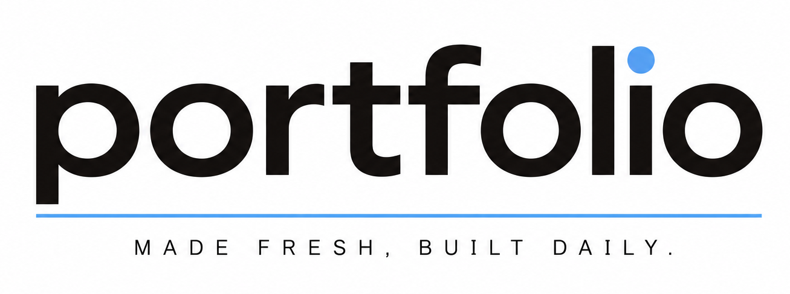
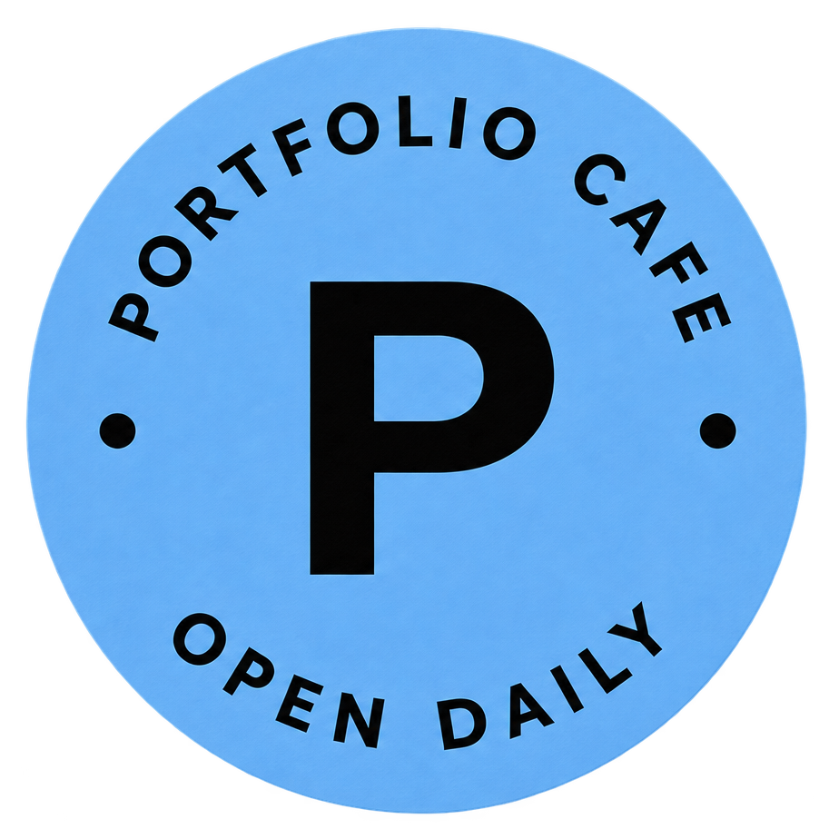
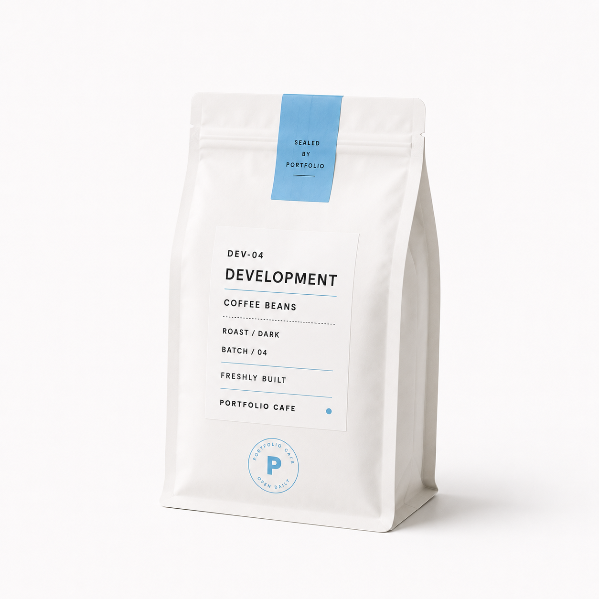
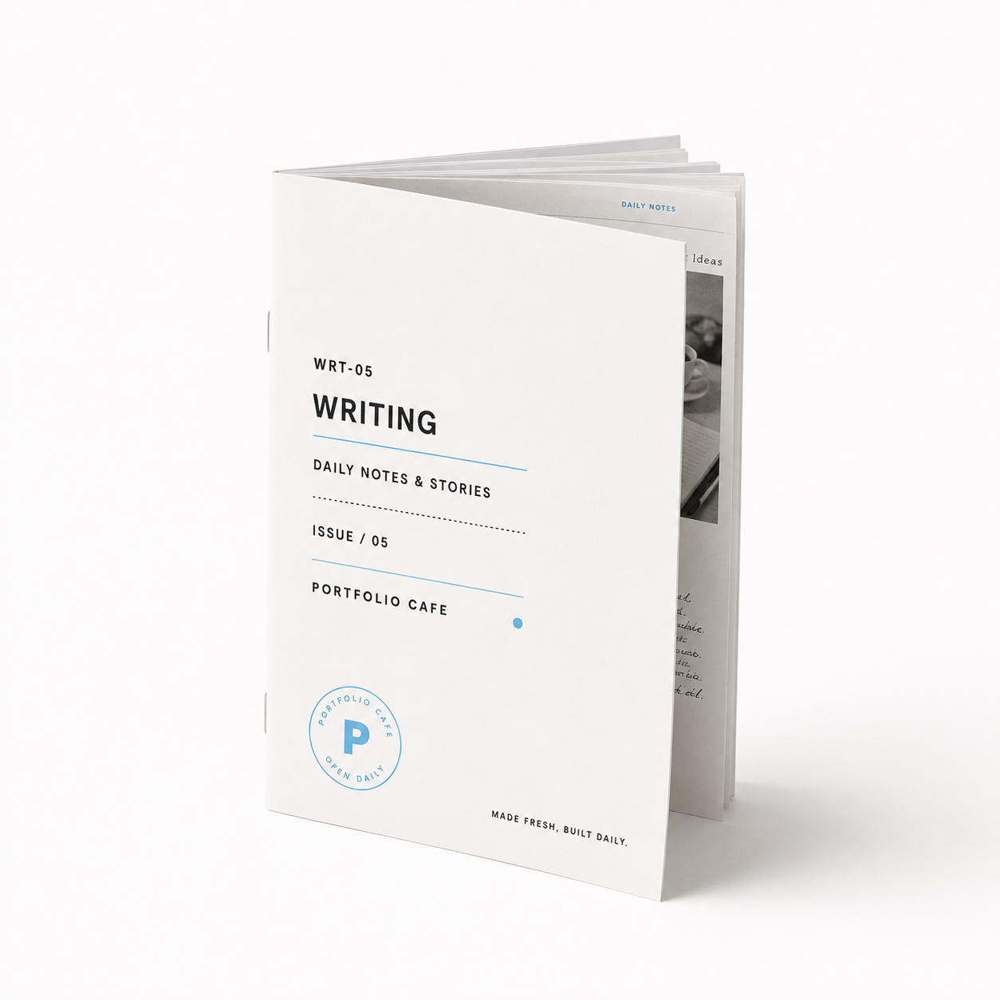
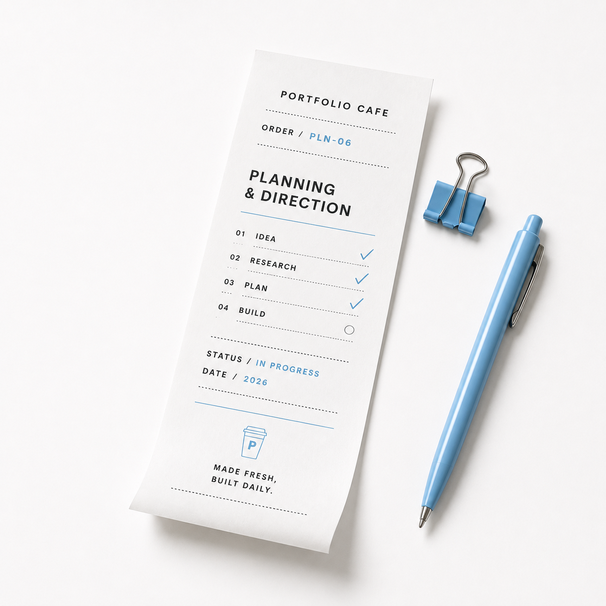
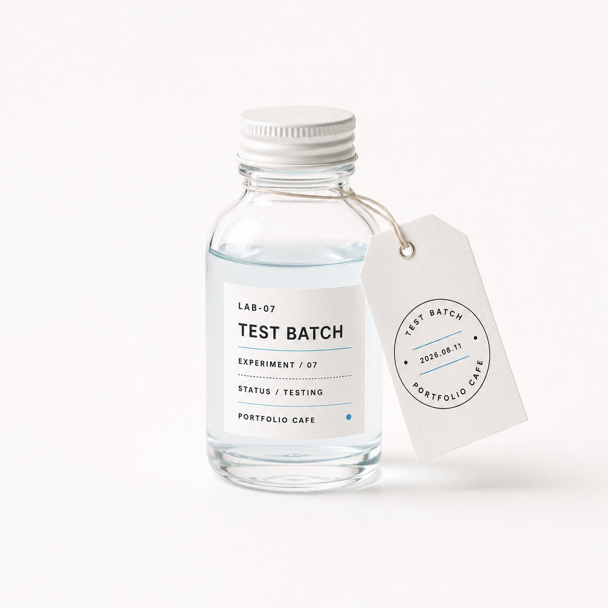
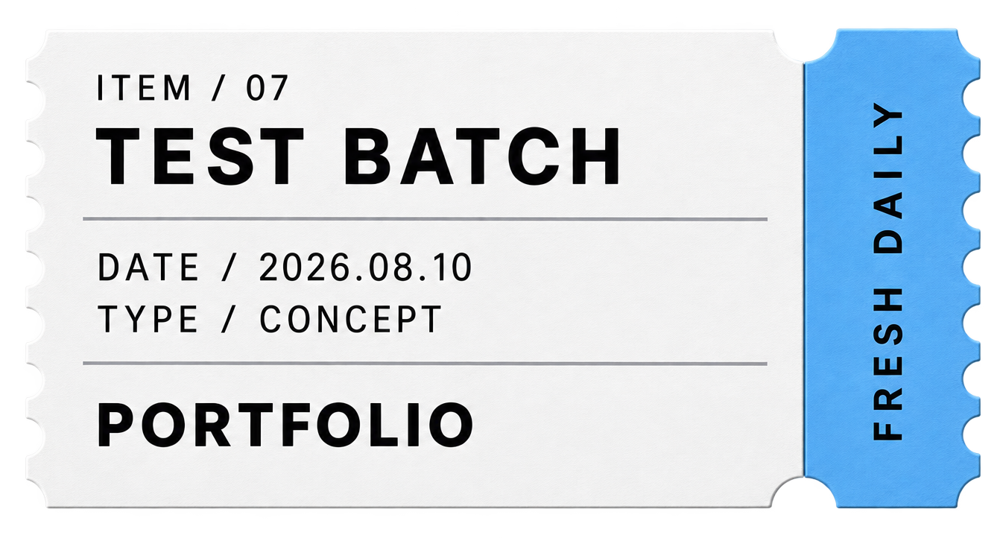
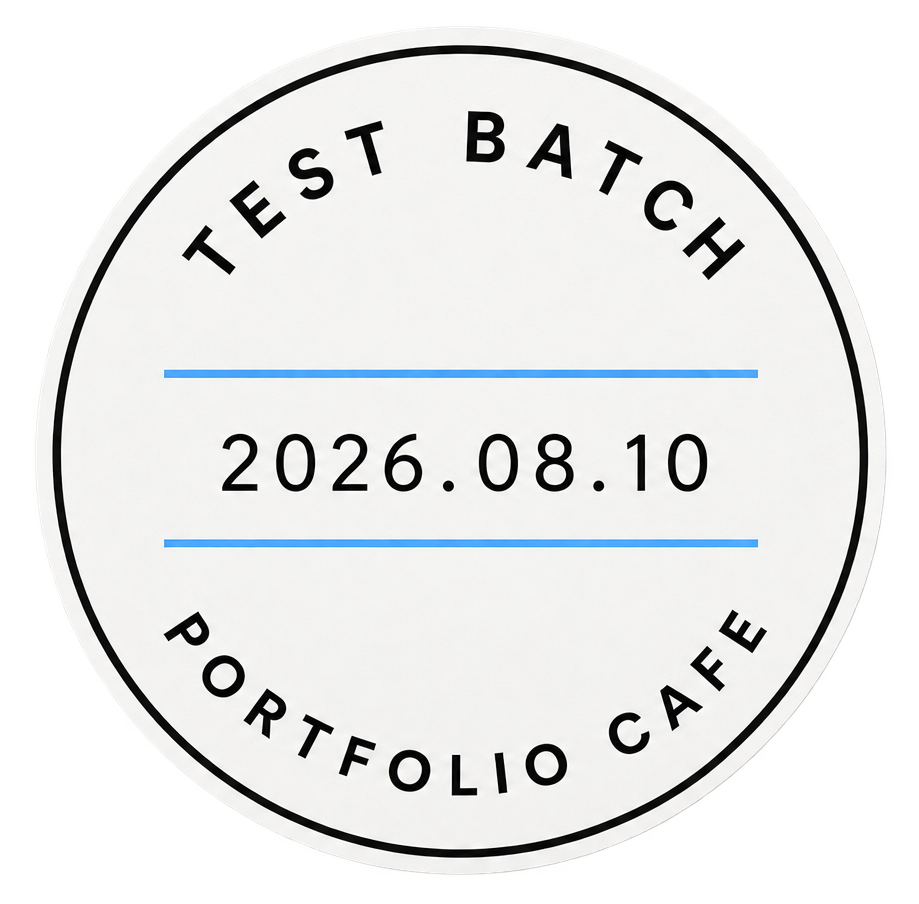

01WEB APPLICATION

PORTFOLIO CAFE ／ OPEN DAILY
PORTFOLIO CAFE

portfolioMADE FRESH, BUILT DAILY.毎日考えて、つくって、更新していく。
いつでも開いているカフェのように、その時々の新鮮なアイデアや作品を並べています。
WEB DEVELOPER / DESIGNERWebアプリを中心に、企画・デザイン・実装・改善まで取り組んでいます。


APP-01 FRESHLY SERVED
CATEGORY / MENU
つくったものを、7つのメニューに分けています。気になる商品からご覧ください。
APP-01 DRINKS

WEB-02 TAKEOUT

DES-03 SWEETS

DEV-04 BEANS

WRT-05 ZINE

PLN-06 ORDER SHEET

LAB-07 TEST BATCH
SIGNATURE ITEMS
設計と実装だけでなく、実際に使いながら改善を重ねている代表作品です。

IN OPERATION
記事の掲載・更新から分析、履歴保存までを一つの運用フローとして設計した、自分用の管理ツールです。
CURRENT BATCH / 2026
今日も店内で、次のアイデアを仕込んでいます。

Portfolio Cafe コンセプト検証
NOW BREWING学校公式SNS運営
IN SERVICEReact / TypeScript 学習
DAILYWebアプリ・管理ツール改善
FRESHLY SERVEDABOUT THE MAKER
職業訓練校でWeb制作を学びながら、WebサイトやWebアプリの企画・デザイン・実装・改善に取り組んでいます。HTML・CSS・JavaScriptに加え、Reactを用いたWebアプリ開発も経験しています。
Aboutを詳しく見る →